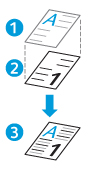

Formular fond
Formularele de fond vă permit să îmbinaţi datele lucrării de imprimare cu formulare stocate pe unitatea de hard disc a imprimantei. În momentul în care imprimaţi o lucrare cu un formular de fond, documentul şi formularul vor fi îmbinate. Documentul final arată ca şi cum ar fi fost imprimat pe un formular preimprimat.
Înainte de a salva un formular de fond, trebuie să îl creaţi folosind o altă aplicaţie, cum ar fi Microsoft Word. Apoi salvaţi formularul de fond pe unitatea de hard disc a imprimantei.

|
- Formular de fond
- Lucrare de imprimare din prim-plan
- Documentul imprimat rezultat
|
- Pentru a crea un formular de fond:
- Faceţi clic pe Formulare Fond.
- Efectuaţi una dintre următoarele acţiuni pentru a seta Nume Formular:
- La Nume Formular, faceţi clic pe săgeţi pentru a afişa formularele de fond existente şi a selecta o opţiune.
- Pentru a crea un formular, tastaţi un nume.
- Pentru a aplica formularul de fond la lucrarea de imprimare din prim-plan, selectaţi o opţiune în Aplicare Pagini Formular:
 Lucrare Integrală aplică paginile formularului de fond la lucrarea de imprimare din prim-plan. Acest proces se repetă până când se imprimă toate paginile lucrării de imprimare din prim-plan.
Lucrare Integrală aplică paginile formularului de fond la lucrarea de imprimare din prim-plan. Acest proces se repetă până când se imprimă toate paginile lucrării de imprimare din prim-plan.- O Dată: aplică o singură dată paginile formularului de fond la lucrarea de imprimare din prim-plan. Restul de pagini ale lucrării de imprimare din prim-plan se imprimă fără formular de fond.
- O Dată, apoi Repetare: aplică o dată paginile formularului de fond la lucrarea de imprimare din prim-plan. Apoi repetă procesul începând cu o pagină specificată a formularului de fond, până când se imprimă toate paginile lucrării de imprimare din prim-plan.
- Pentru a deplasa imaginea paginii de-a lungul axelor X şi Y, introduceţi valorile de deplasare în câmpul Deplasare Imagine.
- Pentru a alege inchi sau milimetri, în partea de jos a ferestrei, faceţi clic pe săgeţi, apoi selectaţi unitatea de măsură.
- Faceţi clic pe OK.